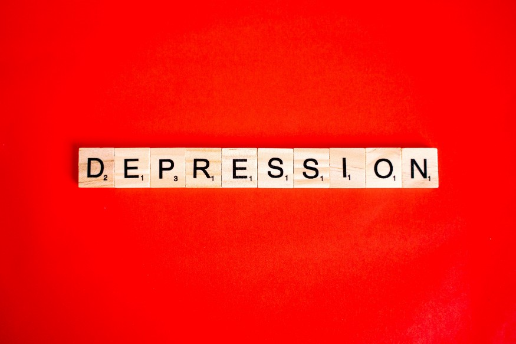
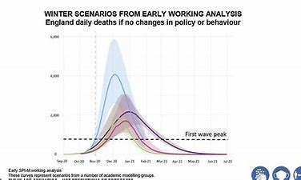

THE HORRIFIC PANDEMIC
NEGATIVE IMPACT
There are many negative impacts of this lockdown. Some of them are listed below:-
MORTILITY
The first and most obvious question is a fairly simple one — have lockdowns killed people? The answer is also fairly simple — quite clearly not, at least in the short term. There’s been a strong narrative that lockdowns are deadly, and while I’ll get to cancer and heart disease in a moment, here I’m just talking about death specifically. If lockdowns/COVID-19 interventions, were associated with an immediate increase in mortality, what we would expect to see is that places with more restrictive interventions would have more EXCESS deaths (i.e. deaths from any cause) than those without, regardless of COVID-19 cases.

Suicide and Mental Health
I’ve already written quite a bit about suicide, and while the data is still rolling in, the evidence is pretty clear that there has been no association between government interventions against COVID-19 and an increase in suicides. So that’s good, but it’s hardly the whole story when it comes to mental health. It’s clear from study after study that there is an association between high numbers of COVID-19 cases, government intervention, and problems with mental health. There is strong evidence that in most places that locked down in early 2020 there were substantial increases in depressive thoughts, anxiety, and other issues, although interestingly there is also some evidence that stress, suicide, and divorce were less on people’s minds.
Disruptions To Health Services
Have government interventions caused deaths due to disruptions to health services? In this arena, chronic health issues and cancer are a huge problem. These are diseases that are often substantially mitigated if caught early, but are usually life-threatening and deadly if left without treatment for long periods of time. Distressingly, there is a lot of evidence that, during the pandemic, diagnostics for these diseases, particularly cancer screening programs, have been delayed or even stopped. That’s not great, and it gets worse — a paper in the Lancet estimated that missed screening and diagnostic appointments would be associated with a huge increase in cancer mortality in the coming years. Similarly, there appears to be evidence that during the pandemic people have avoided care for heart disease even if they had acute issues that needed immediate help.

Positive Impacts of pandemic
Positive Impact
My Experience of pandemic
My Experience